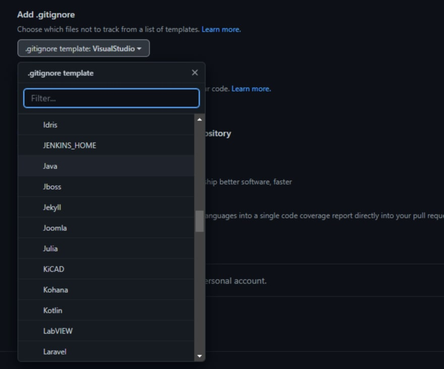

在本文中，我们将讨论什么是 .gitignore 文件、如何设置 .gitignore 文件，以及为什么这很重要。
.gitignore 文件是一个文本文件，它告诉 git 不要跟踪特定的文件、目录或文件类型。
例如，以下 .gitignore 文件告诉 git 忽略 .suo 文件、.dll 以及 node_modules 目录中的所有内容：
*.suo
*.dll
node_modules完整的 .gitignore 文件比这大得多，但这可以让您很好地了解典型的 .gitignore 文件中的内容。
如果您的 Git 仓库中有.gitignore文件，Git会在您尝试添加文件和文件夹时忽略所有匹配的文件和文件夹。
并不是编程项目中的每个文件都非常重要，需要由GIT进行跟踪。许多文件是在特定机器或操作系统上编译代码的特定结果，不应由版本控制进行跟踪。例如，两个人在两个不同的操作系统上可能会从相同的代码生成两个不同的可执行文件。虽然可执行文件可以在一台机器上运行，但它可能会给另一台机器带来严重的问题。
此外，许多临时文件占用了大量的磁盘空间，会使你的git仓库不必要地变大。
由于这些原因，我们在检入代码时使用 .gitignore 文件来过滤掉不需要的文件。然后拉取我们代码的人在他们的机器上重建代码。一旦他们完成了他们的工作，他们会提交他们的代码更改，一旦你拉取，你也会有这些更改。
因为我们引入了.gitignore文件，所有用户将共享相同的规则，即哪些文件被检入，哪些文件被忽略。
既然我们已经讨论过什么是 .gitignore 文件以及为什么需要这个文件，那么让我们来谈谈如何获得一个.gitignore 文件。
通常，您可以通过以下两种方式之一获取 .gitignore 文件：
.gitignore 文件并手动将规则添加到文件中.gitignore 文件复制过来。创建 .gitignore 文件非常简单，只需在文件资源管理器中右键单击并选择创建一个新文件，然后将其命名为.gitignore。您还可以运行 touch bash 命令以使用 touch .gitignore 创建空文件。
重要说明：.gitignore 文件可以放在应用程序的任何目录中并影响所有嵌套目录。但是，我建议将 .gitignore 文件放在 GIT 仓库根目录中以获得最一致的结果。
但是，我几乎从不手动创建 .gitignore 文件。相反，我从一个预先创建的模板引入。
大多数时候，我使用预先存在的.gitignore 模板开始我的项目。
当您创建新仓库时，GitHub 和其他 git 服务商为您提供的选项之一是从支持的模板列表中选择一个 .gitignore 模板，如下图所示：

这将选择一个预构建的.gitignore 文件供您在程序中使用。有关此功能及其支持的语言的更多详细信息，请参阅 GitHub 的文档。
重要说明：正确的 .gitignore 模板可能与您的语言不匹配。例如，在编写 C# 代码时，当所有 dotnet 语言共享一个 VisualStudio 模板时，您可能认为您的模板名称将是 csharp 甚至是 dotnet。同样，JavaScript 被归类在 Node 下，而不是 JavaScript。
此功能在创建新存储库时非常有用，但如果您已经创建了存储库怎么办？
值得庆幸的是，GitHub 发布了一个 GitIgnore 存储库，其中包含各种语言的各种 .gitignore 文件。当我需要找到一个新的 .gitignore 文件并且没有可以从现有项目借用的模板时，这是我的默认资源。
一旦你有了一个合适的.gitignore文件，你可能会出现需要为你的项目定制.gitignore文件的情况。
如果您找到要添加到 .gitignore 文件的特定文件或文件夹，只需将文件按名称或路径添加到.gitignore 文件的底部即可。
例如，要忽略 .obsidian 目录中的 workspace.json 文件和 resources 目录中 _gen 子目录的内容，您需要添加以下条目：
.obsidian/workspace.json
/resources/_gen/有关 .gitignore 文件中支持的模式和格式的更多信息，请参阅 git 文档。
此外，许多图形化的 git 工具（如 GitKraken ）允许您在提交期间右键单击文件将它们添加到您的 .gitignore 文件中。
总而言之，.gitignore 文件是一种灵活而简单的方式来控制进入您的 git 存储库的内容。
如果你在使用 git，有一个 .gitignore 文件，你的代码将更便携，包含更少的“垃圾”文件，占用更少的空间，并且会感觉更专业。
[1] GitIgnore 存储库: https://github.com/github/gitignore[2] git 文档: https://git-scm.com/docs/gitignore[3] GitKraken: https://GitKraken.com